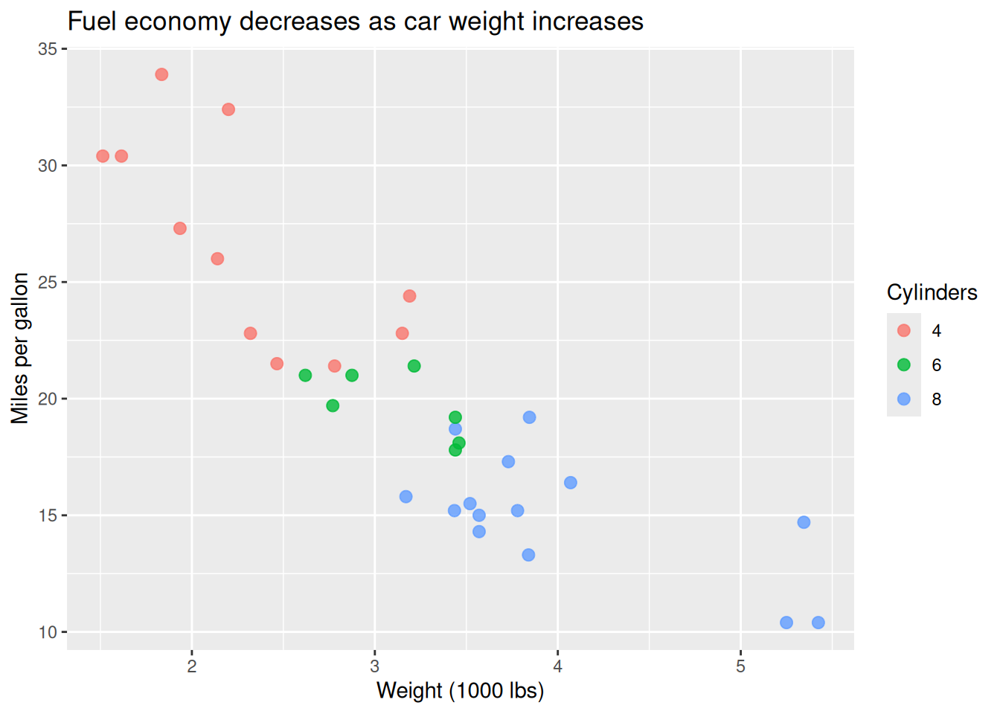

```{r}
#| label: fig-yield-analysis
#| fig-cap: "Annual crop yield trends by region (2000-2023)."
#| warning: false
#| message: false
library(tidyverse)
# Analysis code here...
```9 Quarto
9.1 Why Quarto?
At emLab, we believe that data and code are only as valuable as the narrative that connects them. While code comments explain the “how,” Quarto documents (.qmd) are used to explain the “so what.” We use Quarto as one of our primary tools for integrating code with scientific narrative to ensure that our logic, data, and results are inseparable. This “literate programming” approach transforms opaque scripts into transparent, reproducible research products. This format allows us to interleave code chunks with visualizations and scientific interpretation. By then rendering these documents to HTML and hosting them via GitHub Pages, we can ensure that our internal documentation is as accessible and robust as our public-facing work. A prime example of this workflow is our ocean-ghg repository, where the entire analytical pipeline is documented and served as a live technical website.
9.2 Chunk Best Practices
To keep documents clean and professional, we follow a standardized approach to code chunks.
9.2.1 The Hash-Pipe Syntax
Use the #| (hash-pipe) syntax at the top of your code blocks to set options. This keeps the configuration clearly separated from the executable code.
9.2.2 Global Execution Options
For consistency across a document, you can set default chunk options in the YAML header. This avoids repetitive code in every block and ensures a uniform “look” for the report.
---
title: "Project Analysis"
execute:
echo: false
: false
message: false
cache: true
---For repos with multiple .qmd files (e.g., when making a quarto book), default universal execuition options can be stored in a separate _quarto.yml file, which applies to all rendered .qmd files in the project directory.
9.3 Chunk Labeling
Always label your chunks using kebab-case (e.g., process-spatial-data). Labels are essential for debugging, navigation, and cross-referencing.
9.4 Figures, Tables, and Cross-References
To maintain professional and navigable documents, all key results must be appropriately labeled and referenced within the text.
9.4.1 Figures
For a chunk to be treated as a cross-referenceable figure, its label must start with the fig- prefix. You must also provide a fig-cap.
```{r}
#| label: fig-map
#| fig-cap: "Spatial distribution of marine protected areas."
#| eval: true
mtcars |>
dplyr::mutate(cyl = factor(cyl)) |>
ggplot2::ggplot(ggplot2::aes(x = wt, y = mpg, color = cyl)) +
ggplot2::geom_point(size = 2.5, alpha = 0.8) +
ggplot2::labs(
title = "Fuel economy decreases as car weight increases",
x = "Weight (1000 lbs)",
y = "Miles per gallon",
color = "Cylinders"
)
```
9.4.2 Tables
Table labels must start with the tbl- prefix. At emLab, we primarily use three packages for table generation, depending on the complexity required:
9.4.2.1 knitr::kable
Best for simple, clean tables with minimal formatting needs. It is lightweight and works perfectly with Quarto’s internal styling.
9.4.2.2 kableExtra
Use this when you need complex formatting, such as grouping rows, adding footnotes, or specific cell styling for PDF/HTML.
9.4.2.3 gt (Grammar of Tables)
The preferred modern choice for highly customized HTML tables. It provides a “ggplot-like” syntax for building tables piece-by-piece.
9.4.3 Exporting Tables to LaTeX (.tex)
If you are collaborating on a paper in Overleaf or a standalone LaTeX document, you should export your tables to .tex files.
Using kableExtra:
```{r}
#| label: tbl-summary
#| tbl-cap: "Summary statistics of model performance."
knitr::kable(summary_df, format = "latex", booktabs = TRUE) |>
save_kable("tables/summary_table.tex")
```Using gt:
```{r}
gt_table |>
gtsave("tables/summary_table.tex")
```9.4.4 Referencing in Text
Reference these elements in your narrative using the @ symbol followed by the label.
- “As shown in the figure labeled
fig-map(Figure 9.1), the distribution is skewed…” - “The results in the table labeled
tbl-summary(Table 9.1) indicate a significant trend…”
9.5 Citations and Bibliography
At emLab, we typically use BibTeX to manage academic references and ensure our technical reports are properly cited. There are two recommended options for creating and maintaining a bibliography file (.bib):
9.5.1 Option 1: Export from Zotero
If you already manage your references in Zotero, you can export a .bib file directly from your library:
- In Zotero, select the collection or items you want to export.
- Go to File > Export Library (or right-click a collection and select Export Collection).
- Choose BibTeX as the format and click OK.
- Save the file as
references.bibin your project directory. - Link this file in your Quarto YAML header:
bibliography: references.bib.
To keep your .bib file in sync as you add references, consider using the Better BibTeX Zotero plugin, which can auto-export the file whenever your library changes.
9.5.2 Option 2: Build a Bibliography File Manually
If you are not using Zotero, you can create and populate a .bib file by hand:
- Create a plain text file in your project directory named
references.bib. - Link this file in your Quarto YAML header:
bibliography: references.bib.
The easiest way to populate your bibliography is by using Google Scholar:
- Search for the paper on Google Scholar.
- Click the “Cite” button (quotation marks icon) and select BibTeX.
- Copy the code block and paste it into your
references.bibfile.
9.5.3 Citing Resources in Text
- Parenthetical: [@costello2016] renders as (Costello et al., 2016).
- Narrative: @costello2016 renders as Costello et al. (2016).
9.6 Quarto Books for Large Projects
When a project grows beyond a single analysis (e.g., multi-year grants), use Quarto Books.
- Structure: Requires a
_quarto.ymland anindex.qmd._quarto.ymlcontains default universal execuition options that apply to all rendered.qmdfiles book. - Benefit: Unified sidebar navigation, cross-chapter referencing, and a shared bibliography.
9.7 Caching Strategy
Caching stores the results of code chunks so they don’t have to be re-run every time you render the document.
9.7.1 When to Use Caching
- Heavy Computation: Chunks taking >5 seconds (e.g., raster processing, MCMC).
- Stable Data Sources: Large datasets that change infrequently.
9.7.2 Disabling Caching for Specific Chunks
Explicitly set #| cache: false for:
- Stochasticity: Simulations or bootstraps without a fixed
set.seed(). - Data Export: Chunks using
write_csv(),ggsave(), orsaveRDS().
9.7.3 Common Pitfalls
- Hidden Dependencies: Use
#| dependson: "chunk-A"if B relies on A. - External Data: Use
#| cache-extra: !expr file.mtime("data.csv").
9.8 Integrating with a targets Pipeline
For projects using the targets package, rendering the Quarto document should be the final step in the pipeline. We recommend using tarchetypes::tar_quarto() for this rather than wrapping a render call in a plain targets::tar_target().
9.8.1 Why tarchetypes::tar_quarto() instead of targets::tar_target()?
You could imagine that one approach to render a quarto document in a targets pipeline would be to define a target like this:
```{r}
# Not recommended
targets::tar_target(report, quarto::quarto_render("analysis/final_report.qmd"))
```However, the problem is that targets has no visibility into what the .qmd file actually depends on. It treats the render as a black box, so it cannot detect when the document’s upstream targets have changed and the report needs to be re-rendered. You end up either re-rendering on every targets::tar_make() call or, worse, serving a stale report without realizing it.
tarchetypes::tar_quarto() solves this by analyzing your .qmd file for targets::tar_read() and targets::tar_load() calls and automatically registering those targets as dependencies. This means targets actually re-render the report when something the quarto document actually reads from the pipeline has changed — no manual dependency tracking required.
```{r}
# Recommended
tarchetypes::tar_quarto(
name = quarto_notebook,
path = "qmd/quarto_notebook.qmd",
quiet = FALSE
)
```Inside your .qmd file, use targets::tar_read(target_name) or targets::tar_load(target_name)to pull results from the pipeline. These calls are what tar_quarto() scans to build the dependency graph.
If you have a strong reason to use targets::tar_target() directly (e.g., a non-standard render workflow), it is still possible, but you will need to manually declare dependencies using inside the target expression to ensure correct invalidation behavior. We strongly recommend simply using tarchetypes::tar_quarto instead.
9.9 Automated Documentation via GitHub Actions
We use GitHub Actions to automatically render Quarto documents into HTML websites hosted via GitHub Pages.
9.9.1 Setting Up GitHub Pages
- Settings: In your GitHub repo, go to Settings > Pages. Set the source to GitHub Actions.
- Workflow: Create .github/workflows/publish.yml.
💡 Privacy Note: To enable GitHub Pages on standard accounts, the repository must initially be public. However, once the initial page has been successfully rendered and published, you can switch the repository back to private. This allows the source code to remain hidden while the rendered HTML link remains public and shareable for partners.
9.9.2 Example Workflow
name: Render and Publish Quarto
on:
push:
branches: [ main ]
permissions:
contents: read
pages: write
id-token: write
jobs:
build-deploy:
runs-on: ubuntu-latest
steps:
- name: Check out repository
uses: actions/checkout@v4
- name: Set up Quarto
uses: quarto-dev/quarto-actions/setup@v2
- name: Install R
uses: r-lib/actions/setup-r@v2
with:
r-version: 'release'
use-public-rspm: true
- name: Install Dependencies
run: |
Rscript -e 'install.packages(c("tidyverse", "tarchetypes", "targets", "gt", "kableExtra"))'
- name: Render and Publish
uses: quarto-dev/quarto-actions/publish@v2
with:
target: gh-pages
env:
GITHUB_TOKEN: ${{ secrets.GITHUB_TOKEN }}9.9.3 Making the Documentation Discoverable
Once your document is rendered to GitHub Pages, you must make it easy for collaborators and the public to find:
- Repo Description: On the main page of your GitHub repository, click the “About” gear icon (top right). Paste the GitHub Pages URL into the Website field.
- Project README: At the very top of your README.md, add a prominent link to the rendered documentation.
9.10 Presentations in Quarto
For lab meetings, conferences, and stakeholder briefings, we use Quarto to generate presentations. This ensures that the plots shown in slides are identical to the ones in our analysis, with no “copy-paste” errors.
9.10.1 The emLab Presentation Template
We are actively developing a standardized emLab Quarto presentation template to ensure a consistent, professional visual identity across our projects.
You can find the current working version of the template here: presentation-ocean-ghg-ttt.
How to use it:
- This repository is configured as a GitHub Template.
- Click the “Use this template” button on GitHub to create a new repository for your project.
- This will provide you with the necessary SCSS styling, logo assets, and YAML configurations pre-set for emLab.
We need your help! This is a living resource. If you improve the styling, fix a bug, or add a cool new slide component, please contribute back to the template repo so the whole lab can benefit.
9.10.2 Format: Revealjs
At emLab, we primarily use revealjs for HTML-based slides. They are mobile-friendly, searchable, and can be hosted alongside our documentation on GitHub Pages.
---
title: "emLab Project presentation"
subtitle: "Subtitle goes here"
author: "Author"
title-slide-attributes:
data-background-image: emlab_logo_horizontal.png
data-background-size: 30%
data-background-position: 50% 85%
data-footer: ""
format:
revealjs:
theme: emlab.scss
slide-number: true
transition: slide
background-transition: fade
incremental: false
footer: "<img src='emlab_logo_horizontal_w.png' class='slide-footer-logo'>"
fig-cap: false
project:
output-dir: docs
---9.10.3 Slide Structure
- New Slide: Use
##to start a new slide.
- Pauses: Use . . . on its own line to create a “fragment” (pause) that reveals the next part of the slide upon a click.
- Columns: Use the “div” syntax to create side-by-side layouts for comparing text and figures.
## Motivation
- Point 1...
- Point 2...
- Point 3...
## Results Overview
::: {.columns}
::: {.column width="40%"}
- Yield increased by 15%
- Significance at $p < 0.05$
- Region A led the growth
:::
::: {.column width="60%"}
::: {.cell}
:::
:::
:::9.10.4 Best Practices for Slides
- echo: false by default: Unless you are giving a coding tutorial, keep code hidden in slides to focus on results.
- Speaker Notes: Use
::: {.notes}to add reminders that only you can see during the presentation (press ‘S’ in the browser).
- Direct Linking: Always include a final slide with a link to the full Quarto documentation/website where the audience can find the underlying code and data.
- Multiplex: For remote presentations, consider enabling multiplex: true in your YAML, which allows the audience to follow along on their own devices as you advance the slides.
- GitHub Pages: Host your presentation on GitHub Pages for easy sharing and to ensure the slides are always in sync with the latest analysis.